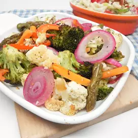

Easy Roasted Vegetable

Description
Colorful, easy roasted vegetables made for Cook and Book. Delicious.
Per Serving: 194 calories; protein 4.8g; carbohydrates 15.7g; fat 14.1g; sodium 352.6mg.
Ingredients
- 5 cups cauliflower florets
- 5 cups broccoli florets
- 1 pound fresh asparagus, trimmed and halved
- 4 medium carrots, cut into matchsticks
- 1 medium red bell pepper, cut into matchsticks
- 1 medium red onion, sliced and separated into rings
- ½ cup olive oil
- 3 tablespoons lemon juice
- 3 cloves garlic, minced
- 1 tablespoon dried rosemary, crushed
- 1 teaspoon salt
- 1 teaspoon ground black pepper
Step: How To Prepare
- Preheat the oven to 400 degrees F (200 degrees C).
- Combine cauliflower, broccoli, asparagus, carrots, bell pepper, and onion in a large bowl.
- Whisk olive oil, lemon juice, garlic, rosemary, salt, and pepper together in a small bowl until blended. Drizzle over vegetables and toss to coat. Transfer to 2 rimmed baking sheets.
- Roast in the preheated oven, tossing occasionally, until tender, 20 to 25 minutes.